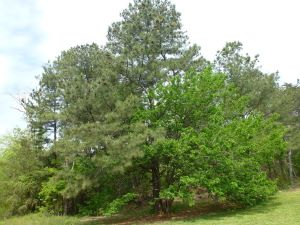
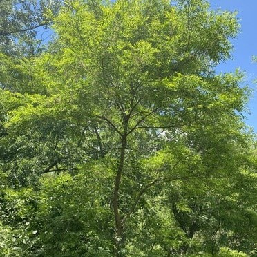
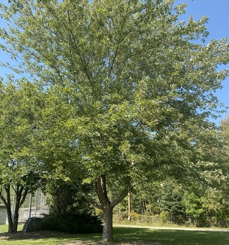
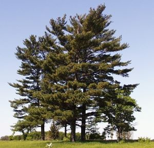
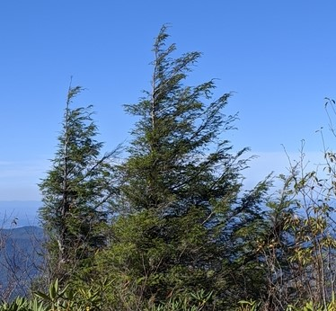

Trees in My Yard
There are lots of trees in my yard, but these are the biggest ones.
I've divided them up into hardwood (aka deciduous) species and softwood (aka coniferous) species.
Hardwoods
These are deciduous trees, meaning they drop their leaves every Fall and grow new ones in the Spring.
Click on the carrot (‣) next to the name to see a picture and learn more about each one.
-
Red Mulberry
 The Red Mulberry tree - scientific name: Morus Rubra - This is a large, fruiting tree with delicious dark purple berries
- During the summer, it attracts lots of wild animals that like to eat the fruit
- Red Mulberry trees can grow up to 70 feet tall and live for more than 100 years!
-
Black Locust
 The Black Locust tree - scientific name: Robinia Pseudoacacia - This is a tall, fast growing tree that spreads quickly by sprouting from long shallow roots.
- The saplings have long, sharp thorns on them, so they can be difficult to remove by hand.
- The wood is easy to split and smells good when burned.
-
Silver Maple
 The Silver Maple tree - scientific name: Acer Saccharinum - This type of maple grows quickly and can reach heights of more than 100 feet.
- The sap can be boiled to make maple syrup, but it has a lower sugar content than other types, so it's not used commercially.
- The branches are long and brittle, which means I have a mess to clean up after storms.
Softwoods
These are confierous trees, meaning they have needles as leaves - and they keep their needles year round.
Click on the carrot (‣) next to the name to see a picture and learn more about each one.
-
Eastern White Pine
 The Eastern White Pine - scientific name: Pinus Strobus - This fast growing pine once covered most of North-Central and Northeastern North America.
- The tallest, straightest specimens were once referred to as "Mast Pines" because their trunks were used as masts on sailing ships.
- Eastern White Pines can grow to be more than 200 feet tall and live for hundreds of years!
-
Eastern Hemlock
 The Eastern Hemlock - scientific name: Tsuga Canadensis - Also known as the "Canadian Hemlock," this tree can live up to 500 years and reach heights of 100 feet or more.
- Hemlock is used for railroad ties because the wood is especially good at holding spikes.
- The bark was an important source of tannins for the leather tanning industry.
- The Eastern Hemlock is threatened by an invasive insect from East Asia, called the Wooly Adelgid.